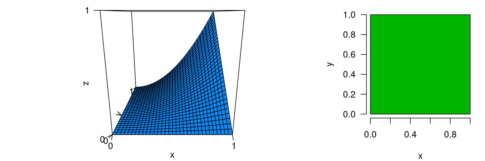
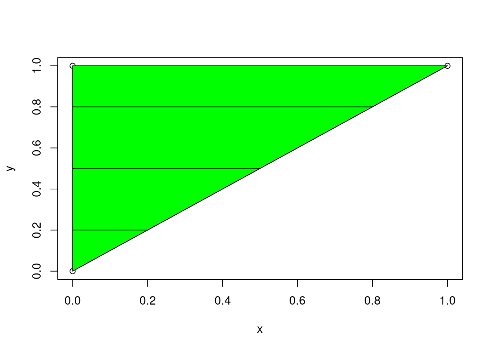
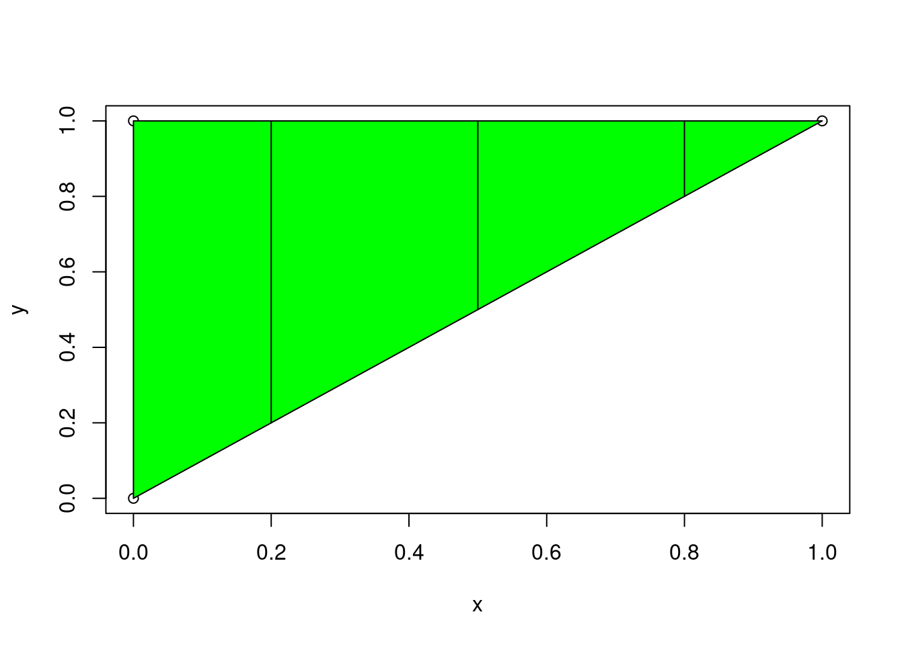
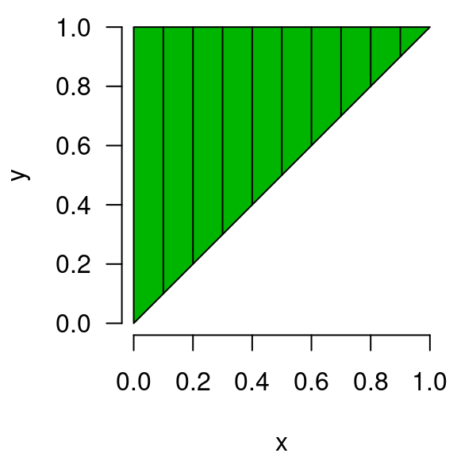

2.11 Multiple integrals
In statistics, we also (quite often!) need to integrate functions involving multiple variables. Considering trying to integrate the following function:
\[ f(x,y) = x^2y. \]
Similar to partial derivatives, we could integrate with respect to \(x\) (treating \(y\) as a constant) or integrate with respect to \(y\) (treating \(x\) as constant). This should be relatively straightforward for you to get \(x^3y/3\) and \(x^2y^2/2\) in these two scenarios.
However, we often need to integrate with respect to both \(x\) and \(y\). Thankfully, this can be done one variable at a time:
\[\begin{align*} \int\int f(x,y) \,dx\,dy&= \int \left\{ \int f(x,y) \,dx\right\} \,dy\\ &= \int \left\{ \int f(x,y) \,dy\right\} \,dx. \end{align*}\]
As we saw with second-order partial derivatives, it turns out that if \(f\) is continuous, the order of integration doesn’t matter (this is known as Fubini’s theorem); more on this later.
Let’s say we’ve decided to integrate with respect to \(x\) first, then \(y\) (as we indicate when we write \(\,dx\,dy\)):
\[\begin{align*} \int \int x^2 y \,dx\,dy&= \int \left\{ \frac{x^3y}{3} \right\} \,dy\\ &= \frac{x^3y^2}{6} \end{align*}\]
Suppose now that we want to integrate \(f(x,y) = x^2y\) across the rectangular region \(0 \le x \le 1\) and \(0 \le y \le 1\) (i.e., to take the definite integral). This would go as follows:
\[\begin{align*} \int_0^1 \int_0^1 x^2 y \,dx\,dy&= \int_0^1 \left\{ \frac{x^3y}{3} \Bigr\rvert_{x=0}^1\right\} \,dy\\ &= \int_0^1 \left\{ \frac{(1)^3y}{3} - \frac{(0)^3y}{3} \right\} \,dy\\ &= \int_0^1 \frac{y}{3} \,dy\\ &= \frac{1^2}{6} - \frac{0^2}{6} \\ &= \frac{1}{6} \end{align*}\]
Conceptually, \(\frac{1}{6}\) represents the volume encompassed within the function \(x^2y\) across the rectangular region \(0 \leq x \leq 1\) and \(0 \leq y \leq 1\); this volume and the rectangular \(x,y\) region are depicted below:

Multiple integrals can taken over any number of input variables:
\[ \int \cdots \int f(x_1, \ldots, x_n) \,dx_1 \ldots \,dx_n \]
As practice, integrate \(f(x,y,z) = x^3z/y\) across x, then y and then z (a triple integral). You should get \(x^4 z^2 \log(y)/8\).
Non-rectangular regions
A final complication to be aware of with multiple integrals is that the region over which we are integrating may not be rectangular. For example, let’s consider our same function as before, \(f(x,y) = x^2 y\), but now our region of integration will be \(0 \leq x \leq y \leq 1\):

Note that all the points in the green triangle (and only the points in the green triangle) satisfy \(0 \leq x \leq y \leq 1\). At \(x = 0.4\) for instance, only points where \(y\) is greater than or equal to 0.4 and less than 1 are shaded green. In comparison with the earlier rectangular region, note that the lower right half is no longer included.
The procedure to integrate \(\int \int f(x, y) \,dx\,dy\) is the same as before, but we need to pay closer attention to the bounds. Since we’re starting with respect to \(x\), let’s figure out the appropriate \(x\) bounds. Visualizing the green region plotted above is immensely helpful in determining the upper and lower bounds for \(x\) (you don’t necessarily need to use a computer, but you should always draw the region of integration if it is not rectangular). To determine the lower and upper bounds of the inner integral with respect to \(x\), we need to answer the question: at any given value of \(y\), what values of \(x\) are within the green region? The answer is: \(0 \le x \le y\). For instance, at \(y = 0.2\), \(x\) can range from 0 to 0.2.
Regarding the range of \(y\) (the outer integral), we need to include the entire range of 0 to 1 in order to capture the entire triangular region. To visualize this, imagine drawing a line over the valid \(x\) values, and repeating this process for every \(y\) value in the range of 0 to 1. A depiction of what this would look like is provided below (hopefully it is clear that the collection of lines would yield the triangle):

Evaluating the integral, we therefore have:
\[\begin{align*} \int_0^1 \int_0^y x^2 y \,dx\,dy&= \int_0^1 \left\{ \frac{x^3y}{3} \Bigr\rvert_{x=0}^y \right\} \,dy\\ &= \int_0^1 \left\{ \frac{(y)^3y}{3} - \frac{(0)^3y}{3} \right\} \,dy\\ &= \int_0^1 \frac{y^4}{3} \,dy\\ &= \frac{1^5}{15} - \frac{0^5}{15} \\ &= \frac{1}{15} \end{align*}\]
Intuitively, this makes sense – our region is smaller, so the volume should be smaller (1/15 instead of 1/6).
As we mentioned earlier, the order of integration doesn’t matter. As practice, integrate \(x^2 y\) over the region \(0 \leq x \leq y \leq 1\), but this time start by integrating over \(y\). Obviously, you should still get 1/15. Hint: to help visualize things, you should draw a figure that looks like this:

If you want even more practice, trying integrating \(x^2 y\) over the region \(0 \le y \le x \leq 1\). You should get 1/10 (i.e., \(1/6 - 1/15\)).
Note that while either order gives the same answer, they do not necessarily involve the same amount of work. It is often the case that one route is much easier to calculate than the other, so keep this in mind if one of the integrals becomes difficult to calculate. And remember to draw those regions of integration (really can’t stress that enough)!